Manuale di riferimento
Copyright
Questo documento è coperto dal Copyright © 2015 dei suoi autori come elencati in seguito. È possibile distribuirlo e/o modificarlo nei termini sia della GNU General Public License (http://www.gnu.org/licenses/gpl.html), versione 3 o successive, che della Creative Commons Attribution License (http://creativecommons.org/licenses/by/3.0/), versione 3.0 o successive.
Collaboratori
Jean-Pierre Charras.
Traduzione
Marco Ciampa <ciampix@libero.it>, 2014-2015.
Feedback
Si prega di inviare qualsiasi rapporto bug, suggerimento o nuova versione a:
-
Documentazione di KiCad: https://github.com/KiCad/kicad-doc/issues
-
Software KiCad: https://bugs.launchpad.net/kicad
-
Traduzione di KiCad: https://github.com/KiCad/kicad-i18n/issues
Data di pubblicazione e versione del software
23 maggio, 2015.
1. Introduzione a Pl_Editor
Pl_Editor è un editor di disposizione (layout) di fogli tecnici che consente di creare riquadri iscrizioni (cartigli), personalizzati inseriti in fogli squadrati.
Il riquadro iscrizioni, associato alla squadratura dei fogli e ad altri elementi grafici (loghi) viene chiamato disposizione pagina.
Gli elementi di base della disposizione pagina sono:
-
Linee
-
Rettangoli
-
Testi (con simboli di formato, che saranno rimpiazzati dal testo corrente, come data, numero di pagina, ecc.) in Eeschema o Pcbnew.
-
Poli-poligoni (principalmente per inserire loghi e forme grafiche speciali)
-
Bitmap.
|
Avvertenza
|
Le bitmap possono essere tracciate sono da pochi plotter (solo PDF e PS). Per questo motivo gli altri plotter tracceranno solo un rettangolo vuoto. |
-
Gli elementi possono essere ripetuti e testi e poli-poligoni possono essere ruotati.
2. File di Pl_Editor
2.1. File in ingresso e riquadro iscrizioni predefinito
Pl_Editor legge o scrive i file di descrizione disposizione pagina *.kicad_wks (fogli di lavoro KiCad).
Per mostrare il riquadro iscrizioni predefinito di KiCad, fino a quando non viene letto un file, viene usato un foglio di descrizione di disposizione pagina predefinito.
2.2. File in uscita
La descrizione della disposizione pagina corrente può essere scritta in un file *.kicad_wks, usando il formato S-espression, che è usato diffusamente in KiCad.
Questo file può essere usato per mostrare la disposizione pagina personalizzata in Eeschema e/o Pcbnew.
3. Teoria delle operazioni
3.1. Proprietà di base degli elementi della disposizione pagina:
Gli elementi di base della disposizione pagina sono:
-
Linee
-
Rettangoli
-
Testi (con simboli di formato, saranno rimpiazzati dal testo corrente, come data, numero di pagina, ecc.) in Eeschema o Pcbnew.
-
Poli-poligoni (usati principalmente per piazzare loghi e speciali simboli grafici). Questi poli poligoni vengono creati da Bitmap2component, e non possono essere creati dentro pl_editor, dato che non è possibile creare tali forme a mano.
-
Bitmap per piazzare loghi.
|
Avvertenza
|
Le bitmap possono essere tracciate solo da pochi plotter: solo PDF e PS. |
Perciò:
-
Testi, poli-poligoni e bitmap sono definite da una posizione, e possono essere ruotati.
-
Linee (in effetti segmenti) e rettangoli sono definiti da due punti: un punto iniziale e un punto finale. Non possono essere ruotati (non ha senso per i segmenti).
Questi elementi di base possono essere ripetuti.
I testi ripetuti accettano anche un valore di incremento per le etichette (ha significato solo se il testo è di una lettera o una cifra).
3.2. Definizione delle coordinate
Ogni posizione, punto di inizio e punto di fine, degli elementi è sempre relativa ad un angolo pagina.
Questa caratteristica assicura che si possa definire una disposizione pagina indipendente dalla dimensione pagina.
3.3. Angoli di riferimento e coordinate:
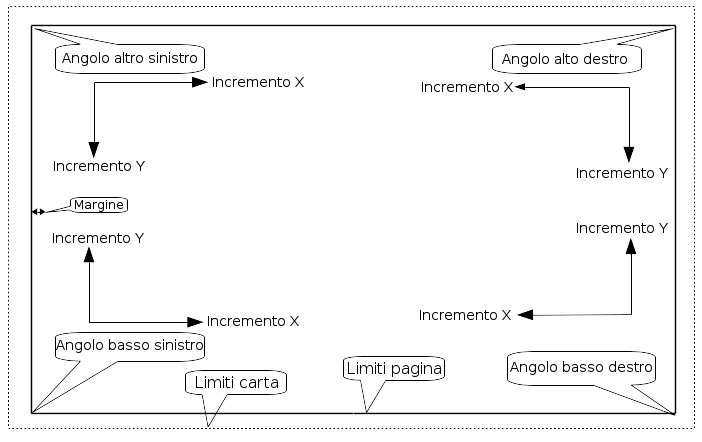
-
Quando la dimensione pagina viene cambiata, la posizione dell’elemento, relativa al suo angolo di riferimento, non cambia.
-
Di solito, i riquadri iscrizioni sono posizionati nell’angolo in basso a destra, perciò questo è l’angolo predefinito durante la creazione di un elemento.
Per i rettangoli e i segmenti, che possiedono due punti definiti, ogni punto ha il suo angolo di riferimento.
3.4. Rotazione
Gli elementi che hanno una posizione definita da un solo punto (testi e poli-poligoni) possono essere ruotati:
Normale: rotazione = 0
Ruotata: rotazione = 20 e 10 gradi.
3.5. Opzione ripeti
Gli elementi possono essere ripetuti:
Utile per creare griglie e etichette griglia.
4. Testi e formati
4.1. Simboli di formato:
I testi possono essere delle semplici stringhe e possono includere simboli di formato.
I simboli di formato vengono rimpiazzati dai valori correnti in Eeschema o Pcbnew.
Sono simili ai simboli di formato delle funzioni printf.
Un simbolo di formato è un % seguito da una lettera.
Il formato %C possiede una cifra (identificatore di commento).
I simboli di formato sono:
%% = rimpiazzato da %
%K = versione KiCad
%Z = nome formato pagina (A4, USLetter …)
%Y = nome azienda
%D = data
%R = revisione
%S = numero foglio
%N = numero di fogli
%Cx = commento (x = 0 a 9 per identificare il commento)
%F = nomefile
%P = percorso foglio (nome completo foglio, per Eeschema)
%T = titolo
Esempio:
"Dimensione: %Z" mostra "Dimensione: A4" o "Dimensione: USLetter"
Modalità schermo utente:
 attivata. Il riquadro
iscrizioni viene mostrato come in Eeschema e Pcbnew
attivata. Il riquadro
iscrizioni viene mostrato come in Eeschema e Pcbnew
Modalità schermo "Nativa":
 attivata. Il testo
nativo inserito in Pl_Editor, insieme ai simboli di formato.
attivata. Il testo
nativo inserito in Pl_Editor, insieme ai simboli di formato.
4.2. Testi multiriga:
I testi possono essere multiriga.
Ci sono due modi per inserire un ritorno a capo nei testi:
-
Inserire la sequenza di due caratteri "\n" (principalmente nella finestra di diaglogo di impostazione pagina in KiCad).
-
Inserire un ritorno a capo nella finestra di progettazione di Pl_Editor.
Ecco un esempio:
Impostazione
Uscita
4.3. Testi multiriga nella finestra di dialogo di impostazione pagina:
Nella finestra di impostazione della pagina, i controlli del testo non accettano testo multiriga.
La sequenza di due "\n" caratteri dovrebbe essere inserita per forzare un ritorno a capo in un testo.
Ecco un testo a due righe, nel campo Commento 2:
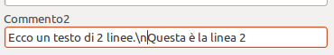
Ecco il testo corrente:
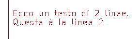
Comunque, se si vuole veramente la "\n" dentro il testo, inserire 2\\n".
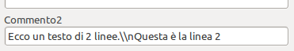
E il testo mostrato:
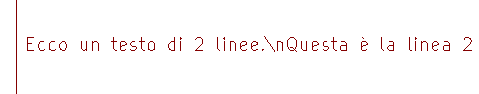
5. Limitazioni
5.1. Limiti pagina 1
Usando Eeschema, lo schema elettrico completo spesso usa più di una pagina.
Normalmente gli elementi di disposizione vengono mostrati su tutte le pagine.
Ma se un utente vuole che alcuni elementi vengano mostrati solo sulla pagina 1, o solo non sulla pagina 1, ciò è possibile impostando l'"opzione pagina 1":
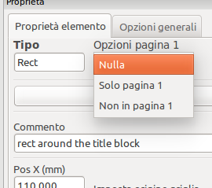
Opzione pagina 1:
-
Nulla: nessun limite.
-
Solo pagina 1: gli elementi saranno visibili solo sulla pagina 1.
-
Non in pagina 1: gli elementi saranno visibili su tutte le pagine a parte la pagina 1.
5.2. Limiti complessivi dimensione testo
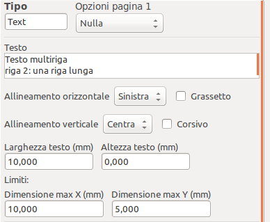
Solamente per i testi, si possono impostare 2 parametri:
-
la dimensione massima in X
-
la dimensione massima in Y
le quali definiscono un rettangolo di delimitazione.
Quando questi parametri non sono a 0, durante la visualizzazione, se il testo completo risulta più grande della dimensione massima X e/o della dimensione massima Y, l’altezza e la larghezza del testo correnti vengono modificati dinamicamente per adattarli alla dimensione massima del rettangolo di delimitazione.
Quando la dimensione corrente è minore della dimensione massima X e/o della dimensione massima Y, la larghezza/altezza del testo non viene modificata.
Il testo senza rettangolo di delimitazione. Dim X max = 0,0 Dim Y max = 0,0

Lo stesso testo con limiti. Dim max X = 40,0 Dim max Y = 0,0

Un testo multilinea, limitato:
Impostazione
Uscita
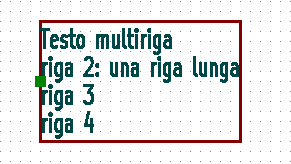
6. Invocazione di Pl_Editor
Pl_Editor viene invocato solitamente dalla riga di comando o dal manager di KiCad.
Dalla riga di comando, la sintassi è pl_editor <*.kicad_wks file da aprire>.
7. Comandi di Pl_Editor
7.1. Schermo principale
L’immagine sottostante mostra la finestra principale di Pl_Editor.

Il pannello di sinistra contiene l’elenco degli elementi di base.
Il pannello di destra è l’editor delle impostazioni dell’elemento.
7.2. La barra strumenti della finestra principale
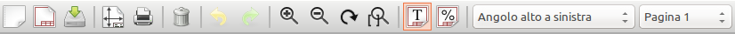
La barra strumenti superiore permette un facile accesso ai seguenti comandi:
|
Seleziona la netlist da elaborare. |
|
Carica un file di descrizione disposizione pagina. |
|
Salva la descrizione disposizione pagina corrente in un file .kicad_wks. |
|
Mostra il selettore dimensione pagina e l’editor dati utente del riquadro iscrizioni. |
|
Stampa la pagina corrente. |
|
Elimina l’elemento attualmente selezionato. |
|
Strumenti di annullamento/ripetizione. |
|
Rispettivamente ingrandisci, rimpicciolisci, ridisegna e inquadra tutto. |
|
Mostra la disposizione pagina in modalità utente: i testi vengono mostrati come in Eeschema o Pcbnew: i simboli di formato testo vengono rimpiazzati dai testi dell’utente. |
|
Mostra la disposizione pagina in modalità nativa: i testi vengono mostrati "come sono", comprensivi dei formati, senza alcuna sostituzione. |
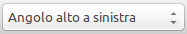 |
Selezione angolo di riferimento, per le coordinate mostrate nella barra di stato. |
7.3. Comandi nell’area di disegno (pannello disegno)
7.3.1. Comandi da tastiera
F1 |
Zoom In |
F2 |
Zoom Out |
F3 |
Ridisegna lo schermo |
F4 |
Sposta il cursore al centro della finestra |
Home |
Imposta la visualizzazione dell’impronta esattamente nella finestra |
Barra spazio |
Imposta le coordinate relative alla posizione corrente del cursore |
Freccia a destra |
Sposta il cursore a destra di una posizione della griglia |
Freccia a sinistra |
Sposta il cursore a sinistra di una posizione nella griglia |
Freccia su |
Sposta il cursore in alto di una posizione nella griglia |
Freccia giù |
Sposta il cursore in basso di una posizione nella griglia |
7.3.2. Comandi con il mouse
Rotellina |
Zoom in e out alla posizione corrente del cursore |
Ctrl + Rotellina |
Pan a destra e a sinistra |
Maiusc + Rotellina |
Pan su e giù |
Clic tasto destro |
Apre il menu contestuale |
7.3.3. Menu contestuale
Mostrato dal clic destro del mouse:
-
Aggiungi linea
-
Aggiungi rettangolo
-
Aggiungi testo
-
Accoda file di descrizione disposizione pagina
Sono comandi per aggiungere elementi di disposizione di base alla descrizione disposizione pagina corrente.
-
Selezione zoom: selezione diretta della finestra di zoom.
-
Selezione griglia: selezione diretta della griglia.
|
Nota
|
Accoda file descrizione disposizione pagina serve ad aggiungere poli-poligoni per i loghi. Dato che solitamente per un logo servono centinaia di vertici, è impossibile creare un poligono a mano. Ma è possibile accodare un file di descrizione creato da Bitmap2Component. |
7.4. Informazioni sulla barra di stato
La barra di stato è dislocata in fondo a Pl_Editor e fornisce utili informazioni all’utente.
Le coordinate sono sempre relative all’angolo selezionato come riferimento.
8. Finestra sinistra
La finestra a sinistra mostra l’elenco degli elementi della disposizione.
Si può selezionare un dato elemento (facendo clic sinistro sulla linea) o, facendo clic destro invece, mostrare un menu a scomparsa.
Questo menu permette di eseguire delle operazioni di base: aggiungere un nuovo elemento o eliminare quello selezionato.
→ Un elemento selezionato viene anche disegnato in un colore diverso nel pannello di disegno.
Albero del progetto: l’elemento 19 è selezionato e mostrato evidenziato nel pannello di disegno.
9. Finestra destra
La finestra destra è la finestra di modifica.
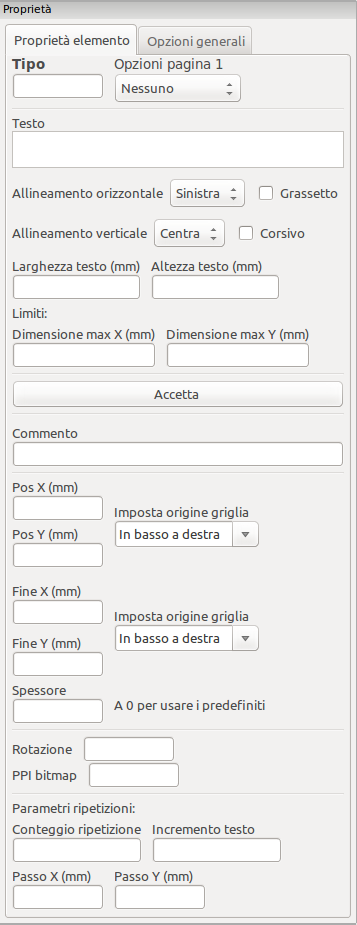 |
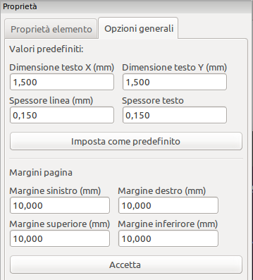 |
Su questa finestra si possono impostare le proprietà pagina e le proprietà elemento dell’elemento corrente.
Le impostazioni mostrate dipendono dall’oggetto selezionato:
Impostazioni per linee e rettangoli |
Impostazioni per testi |
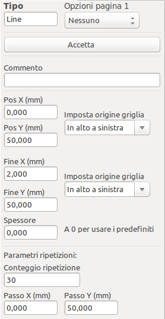 |
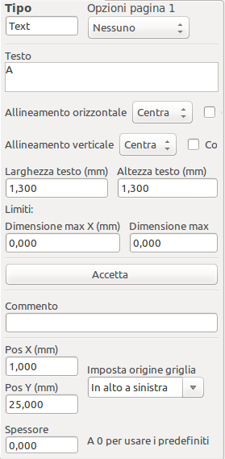 |
Impostazioni per poli-poligoni |
Impostazioni per bitmap |
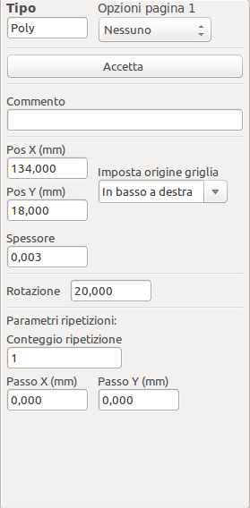 |
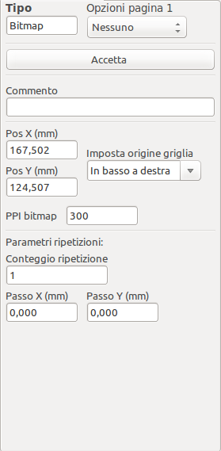 |
10. Modifica interattiva
10.1. Selezione elemento
Un elemento può essere selezionato:
-
Dall’albero di progettazione.
-
Facendo clic sinistro su di esso.
-
Facendo clic destro su di esso (verrà mostrato un menu a scomparsa).
Quando viene selezionato, questo elemento viene disegnato in giallo.
|
Il punto di inizio (
|


Facendo clic destro sull’elemento, viene mostrato un menu a scomparsa.
Le opzioni del menu a scomparsa dipendono leggermente dalla selezione:
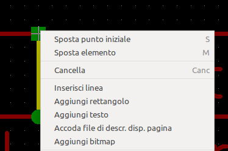 |
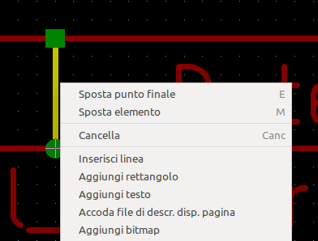 |
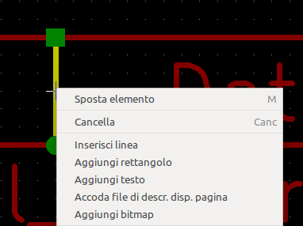 |
Se viene trovato più di un elemento, verrà mostrato un menu di disambiguazione per la selezione dell’elemento:
|
Una volta selezionato, l’elemento, o uno dei suoi capi, possono essere spostati muovendo il mouse e piazzati (clic destro del mouse). |

10.2. Creazione elementi
Per aggiungere un nuovo elemento, fare clic destro con il mouse quando il puntatore del mouse è sulla finestra sinistra o nell’area di disegno.
Viene mostrato un menu a scomparsa:
Menu a scomparsa nella finestra sinistra
Menu a scomparsa nell’area di disegno.
Linee, rettangoli e testi vengono aggiunti facendo semplicemente clic sul corrispondente elemento del menu.
I loghi devono essere prima creati con Bitmap2component che crea un file di descrizione disposizione pagina.
L’opzione accoda file di descrizione disposizione pagina accoda questo file per inserire il logo (un poli-poligono).
10.3. Aggiunta di linee, rettangoli e testi
Quando si fa clic sull’opzione, si apre una finestra di dialogo:
Aggiunta di linee o rettangoli
Aggiunta testo
La posizione dei capi e dell’angolo di riferimento possono essere definite qui.
Comunque queste possono essere anche definite più avanti, dalla finestra di destra, o spostando l’elemento, o uno dei suoi capi.
Il più delle volte l’angolo di riferimento è lo stesso per entrambi i punti.
Se nel nostro caso non è così, è meglio definire l’angolo di riferimento durante la creazione, perché se questo viene cambiato in seguito, la geometria dell’elemento potrebbe risultare alterata.
Quando un elemento viene creato, se viene messo in modalità spostamento, si può rifinire la sua posizione (ciò risulta molto utile per testi e linee o rettangoli minuscoli)
10.4. Aggiunta di loghi
Per aggiungere un logo, un poli-poligono (l’immagine vettorizzata del logo) questo deve essere stato creato in precedenza usando bitmap2component.
Bitmap2component crea un file di descrizione disposizione pagina in coda al progetto corrente, usando l’opzione Aggiungi file di descrizione disposizione pagina.
Bitmap2component crea un file di descrizione disposizione pagina che contiene solo un elemento: un poli-poligono.
Comunque, questo comando può essere usato per accodare qualsiasi file di descrizione disposizione pagina, il quale viene unito al progetto corrente.
Una volta inserito un poli-poligono, questo può essere spostato ed i suoi parametri modificati.
10.5. Aggiunta immagini bitmap
È possibile aggiungere una immagine bitmap usando i più comuni formati (PNG, JPG, BMP …).
-
Quando una bitmap viene importata, la sua dimensione in PPI (pixel per pollice) viene posta a 300PPI.
-
Questo valore può essere modificato nel pannello proprietà (pannello a destra).
-
La dimensione effettiva dipende da questo parametro.
-
Tenete presente che usando alte definizioni porta alla creazione di file di grandi dimensioni e tempi di disegno e di tracciatura sensibilmente aumentati.
Una immagine bitmap può essere ripetuta, ma non ruotata.